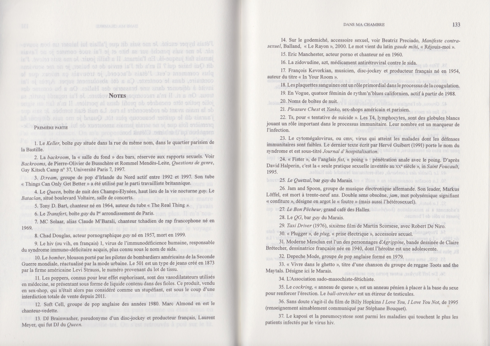
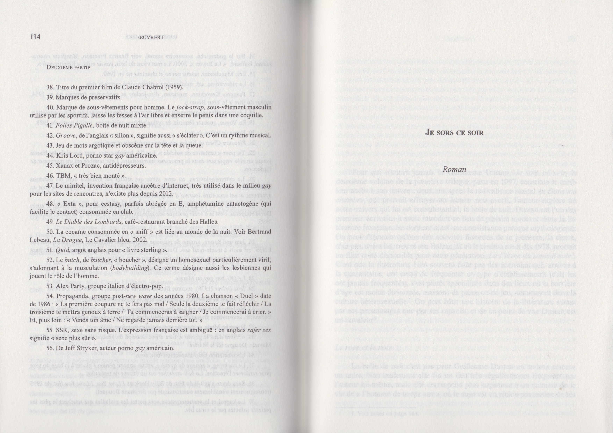
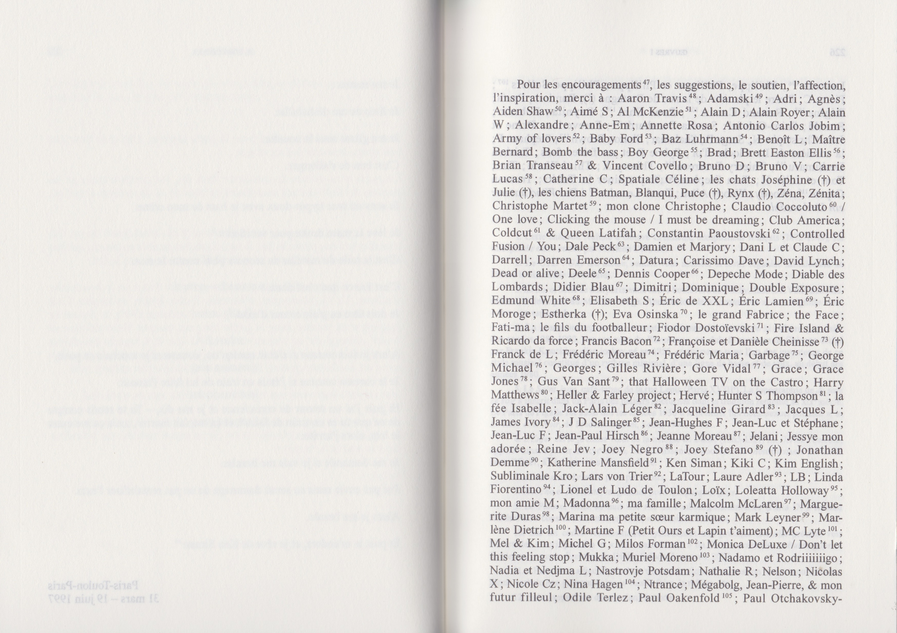
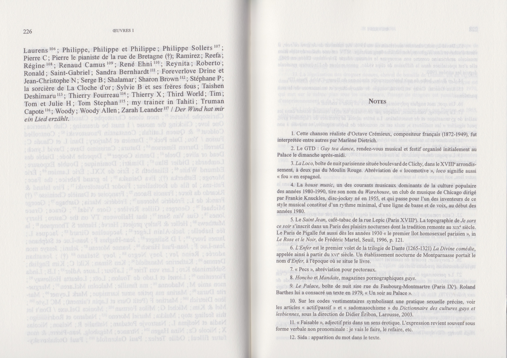

«Notes» est extrait d’«Oeuvres I» (P.O.L, 2013), regroupant les trois premiers romans de Guillaume
Dustan publiés chez P.O.L, «Dans ma chambre», «Je sors ce soir» et «Plus fort que moi». Rédigées en
annexes, celles-ci forment un véritable dictionnaire retraçant le lexique Dustanien.
Télécharger le document complet
@@include('../../footer.html')